Core · Video walkthrough
Find and compare nearby personnel and units on New Call
Use the actual Core dispatch lists to compare availability, ETA, position, staffing and scope.
Before you begin
- Use the fictional Chicago Fire demonstration department and training coordinates.
- Prepare at least two available units, station coordinates, personnel roles and permitted recent positions.
- Confirm call creation and location visibility permissions; routed times require an available routing provider.
- Use an isolated notification environment before saving or dispatching a training call.
Chapters
Watch the walkthrough
Step 1
Prepare a useful comparison
In the Chicago Fire demonstration department, we will compare Engine 51, Truck 81 and Reserve Engine 51. These are fictional training resources. Before opening a call, inspect each unit's type, station assignment and current status. A nearby unit in maintenance is different from an available unit. Check that station coordinates are correct and that crews have usable current assignments. This preparation makes the nearest list an operational comparison instead of a collection of unexplained distances.

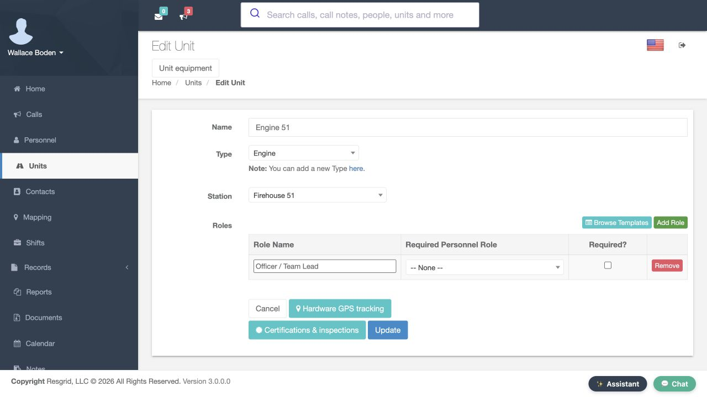
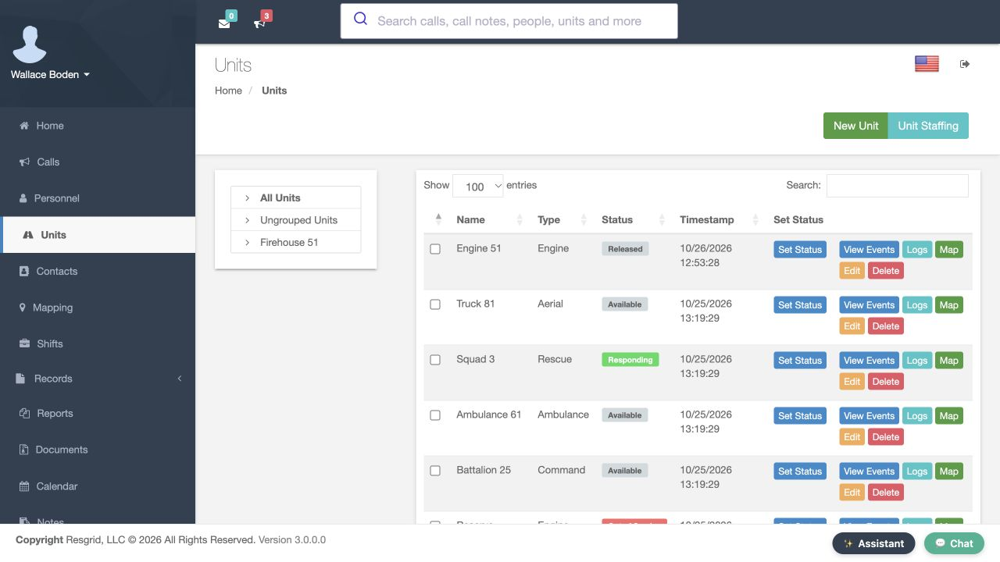
Practice
Compare Engine 51, Truck 81 and Reserve Engine 51: record their visible status, station and crew context.
Step 2
Give the call a location
Open New Call and enter a training name and nature. Choose the intended type and priority, then place a pin at the exercise location. You can enter latitude and longitude and use Set Pin On Map, or use the location tools your department makes visible. Confirm the pin represents the incident rather than a station or destination. Without a usable incident location, Resgrid cannot compare response distances. Wait for the lists to finish refreshing after the point changes.
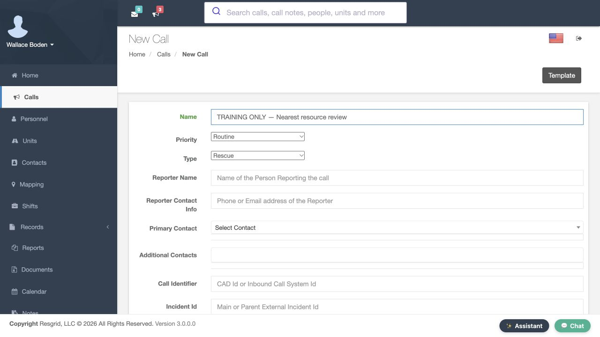
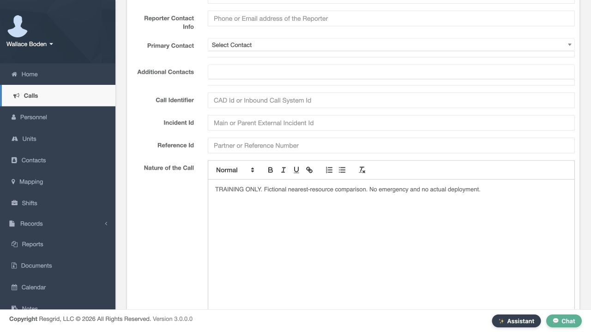
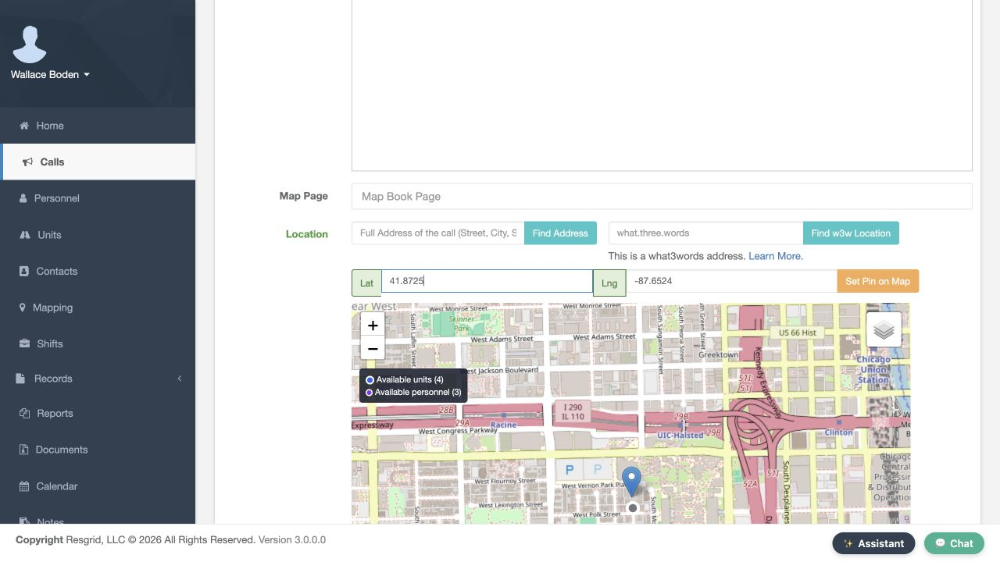
Practice
Set one clear incident pin and confirm the written coordinates describe the same point.
Step 3
Read the unit lists
Scroll to the unit dispatch lists. The Units tab compares the units you may dispatch. The Firehouse 51 tab shows our station resources. This training department has all six units assigned to that station. Read the current status alongside ETA and position. Nearest badges identify the first available resources with measurable distance in the ranked result. They do not certify equipment readiness or crew capability. Compare the named unit and its situation before ticking a recipient, even when it carries the first nearest badge.
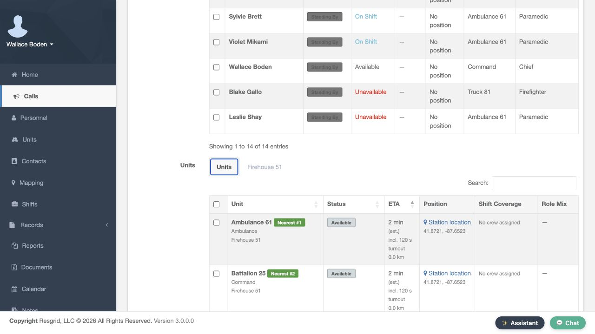
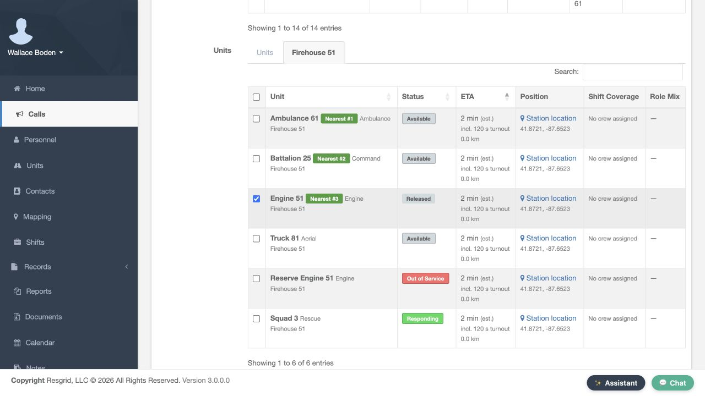
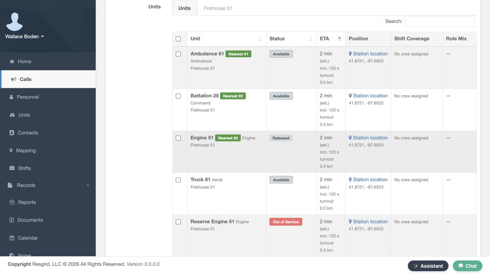
Practice
Explain why the first ranked available unit is or is not appropriate for your exercise.
Step 4
Separate response time from distance
The response comparison can include turnout as well as travel. In Call and Dispatch Settings, set In-quarters turnout to 120 seconds for this exercise, save, and reopen the page. Mobile turnout stays at zero. Return to New Call and set the training pin again. The unit rows now show an estimated two-minute response including 120 seconds of turnout. Here the origin is the station; this does not establish the unit's physical location. The distance measures separation from the incident. An estimated time uses an approximation, while a provider-derived drive time depends on the positions and route information available at that moment.
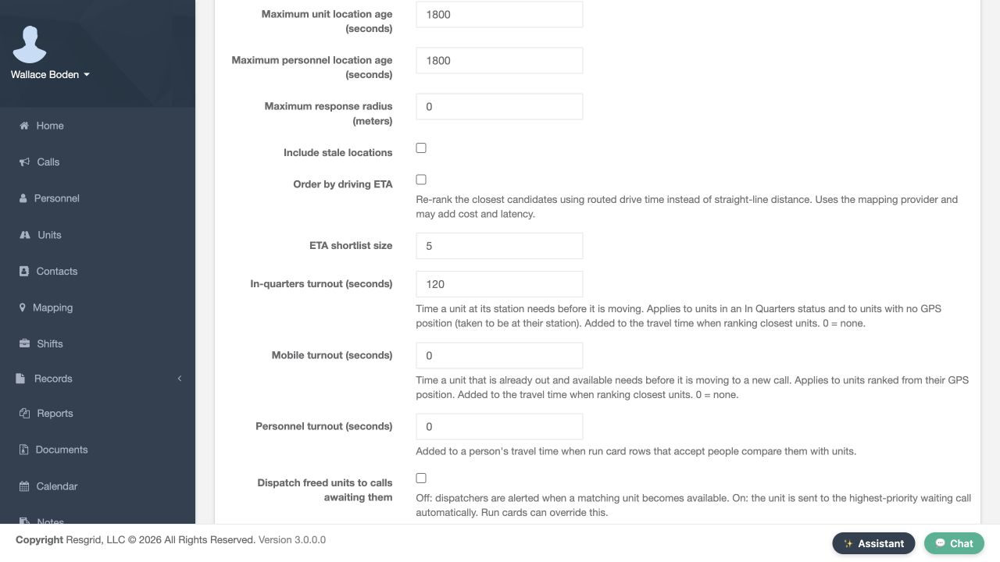

Practice
Compare the saved 120-second station allowance with the literal incl. 120 s turnout annotation, and explain why 0.0 km does not mean an instant response.
Step 5
Read crew and role mix
Inspect Shift Coverage and Role Mix as well as response time. Initially, our unit rows show No crew assigned. Open Units, then Unit Staffing. In this exercise, choose Christopher Herrmann for Engine 51's Officer or Team Lead seat, save, and reopen the page. Engine 51 now says Fully Staffed because its one configured seat is filled. That is not proof of a complete operational engine crew. Define the seats and qualification requirements your department actually needs. Return to New Call and refresh the incident comparison. Read the resulting crew and role mix rather than inferring them from group membership, a vehicle's seats or its nearest badge.
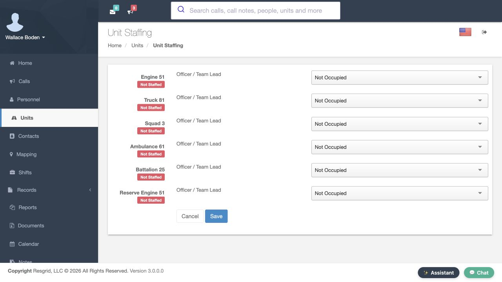
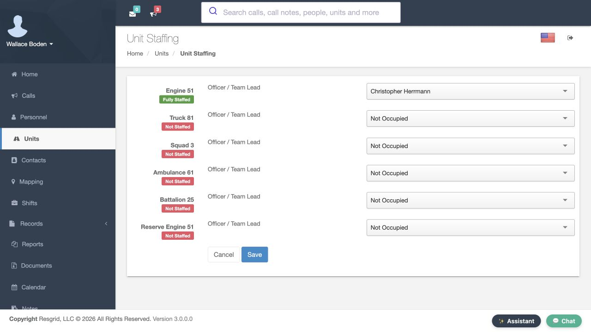
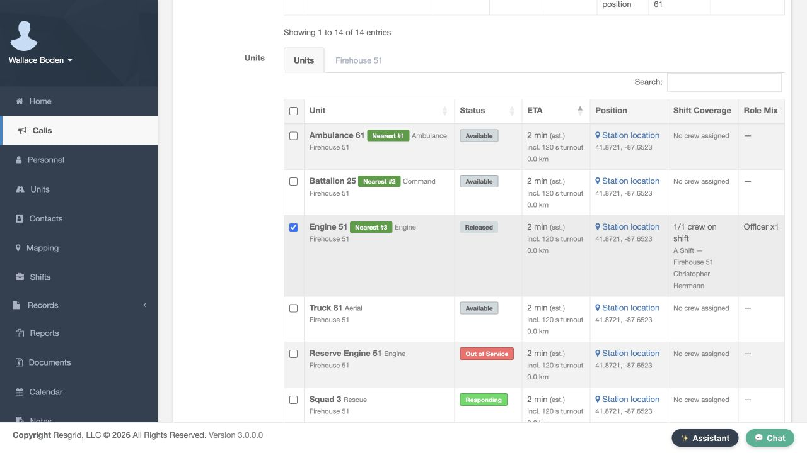
Practice
Compare the one saved training seat with the resulting crew and role mix; distinguish configured staffing from your real operational minimum.
Step 6
Inspect the position source
Click Station location for Engine 51. The position panel compares its response origin with the call. Here Resgrid uses the station origin. That can happen for an In Quarters unit or when no usable GPS fix is available; it does not confirm the unit's physical whereabouts. Check the displayed source and any stale warning. If a location is hidden from you, distance and ETA can also be withheld. Do not fill that gap by assuming the unit is somewhere else on the map.
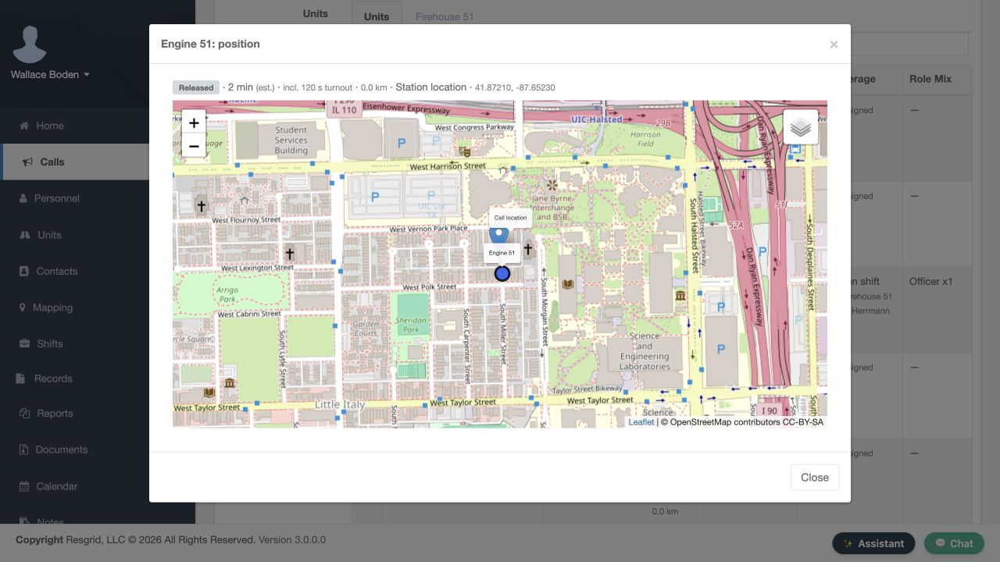
Practice
Describe the visible position source and freshness for one suggested unit.
Step 7
Compare personnel separately
Open Personnel and inspect the same response context for Christopher Herrmann, our fictional officer. Personnel have their own status and staffing information. The positions in this exercise are simulated training fixes. Read any stale label before relying on an estimate. A person can be close to the incident without being available for assignment, and an available person may have no usable position. A unit assignment gives useful crew context, but it does not establish that this person shares the unit's position. Read the actual row rather than transferring a unit's ranking to every crew member or assuming a role name proves current qualification.
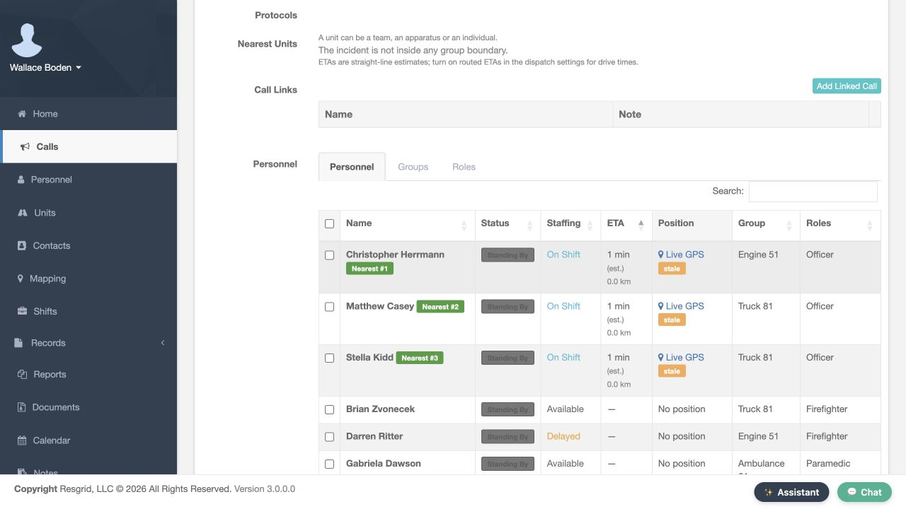
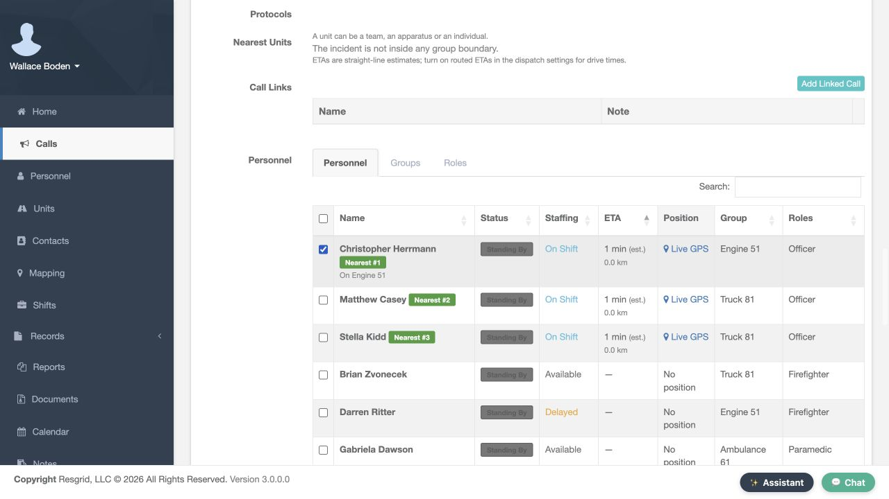
Practice
Compare a person and a unit without treating their availability or positions as interchangeable.
Step 8
Understand areas and scope
Open Call and Dispatch Settings and review Group-Scoped Dispatch. Response area boundaries describe which area contains an incident. The Group Boundary editor under Stations and Groups is where those areas are drawn. Our New Call comparison reports that the incident is not inside any group boundary. We will inspect the controls without saving a boundary. Dispatch scope controls the candidates used for nearest comparisons. These are separate settings. This demonstration uses a department administrator with department-wide scope. A unit can remain in the dispatch list without a nearest comparison, so a missing estimate does not establish that the unit is unavailable. When a comparison is missing, check the permitted scope, current status, and usable position before deciding what resources are available. We will return to New Call without changing permissions.
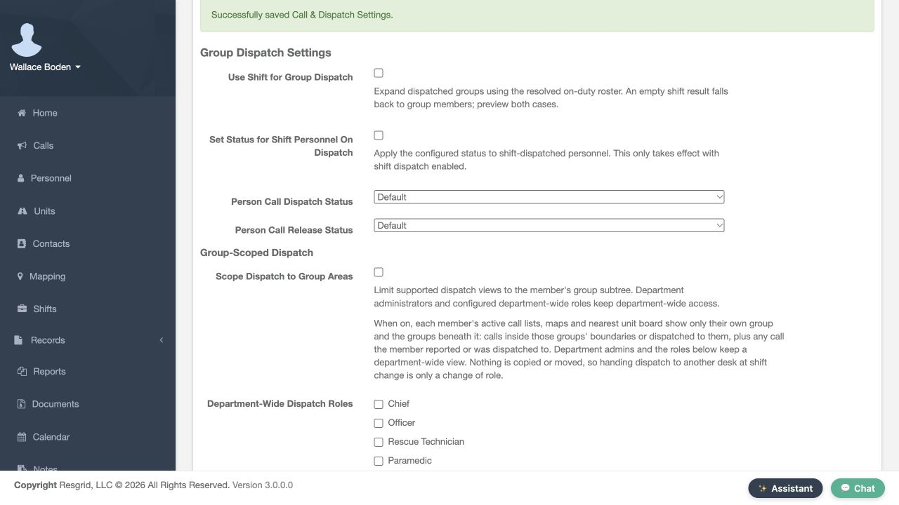
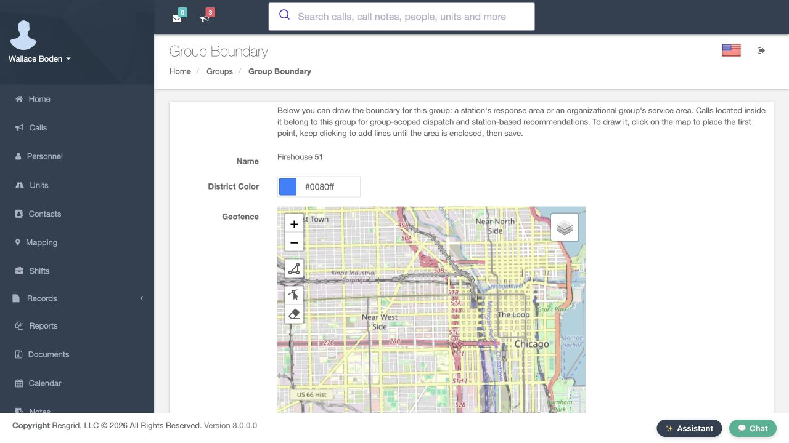
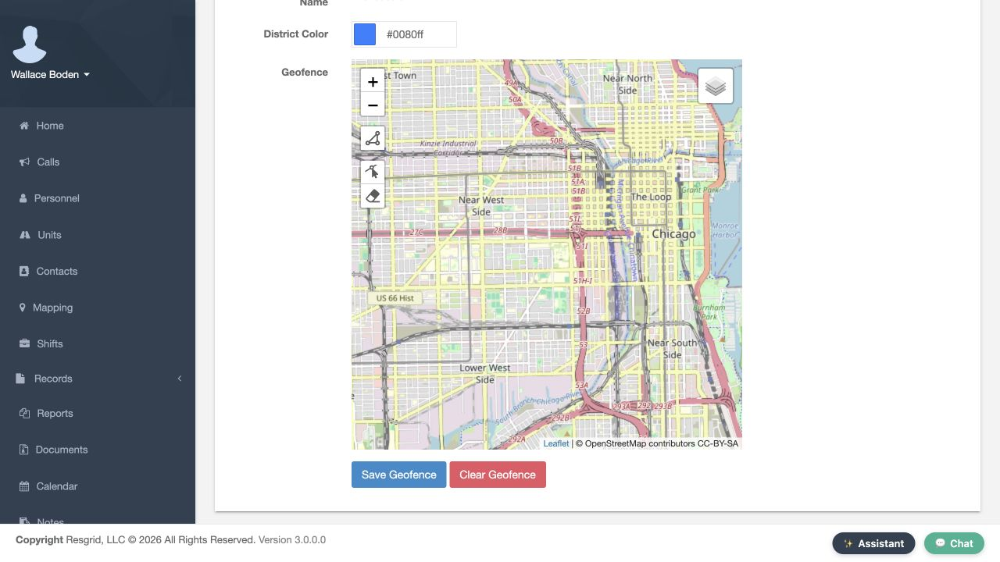
Practice
Identify whether the current operator has department-wide comparison scope, and distinguish a missing estimate from an unavailable unit.
Step 9
Move the pin and compare again
Move the incident pin to a second training location and wait for the refreshed response values. Compare the same named units and personnel before and after the move. Engine 51's distance changes from less than a tenth of a kilometer to 98.8 kilometers, while its estimate rises from two to 195 minutes. These are straight-line estimates, not a routed drive time. A change in distance or turnout-adjusted time may change the order. Check that the labels and pin still describe the intended exercise. The system can retain the view you manually chose, so use the visible coordinates and final list values as evidence instead of expecting every refresh to zoom the map automatically. In this station-based example, several units share an origin, so their distances can change together without changing their order.
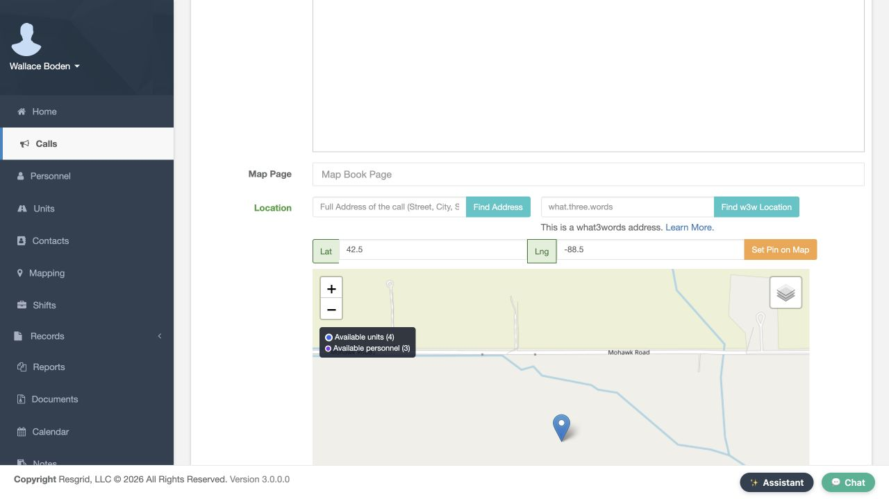
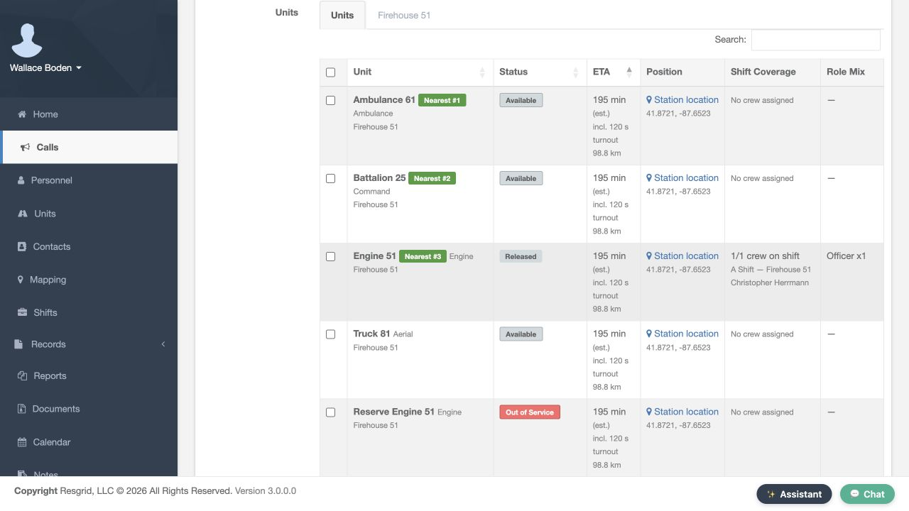
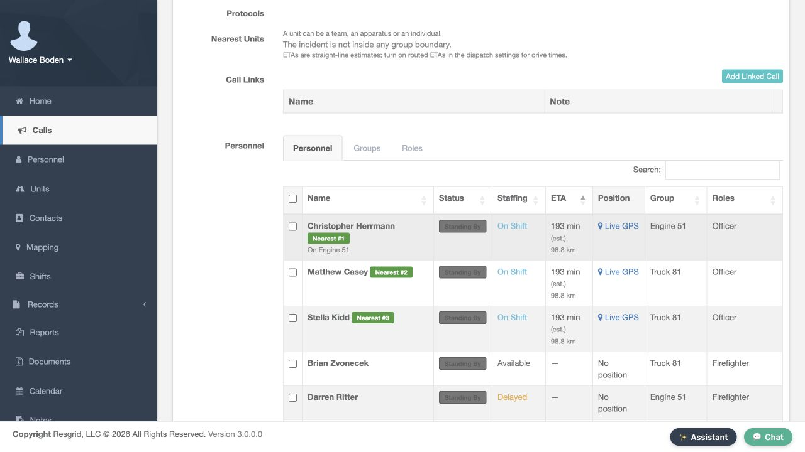
Practice
Record how one named resource changes between two incident locations.
Step 10
Make and verify the dispatch decision
Return the incident pin to the original near training location and wait for the values to refresh. Select the resources that fit the exercise. Here we choose Christopher Herrmann, the first nearby officer, and Engine 51. Engine 51 is third in the overall list, but it is the available engine; the reserve engine is out of service. Check that the unit selection agrees across its station and Units tabs. If a run card also suggests resources, inspect that panel and the final checkboxes together. Ranking does not send anyone by itself. Before saving, review the call, recipients and notification arrangements. After the training save, open the resulting call, 26-4 in this example, and its Dispatched tab. Check Engine 51 and Christopher Herrmann against the intended recipients. This proves the saved assignment; it does not establish that a device received an alert. Confirm member receipt separately. Finish by closing only the training call with Send Notification off, and keep its history. Keep the location source, freshness and estimated-time limits in your decision, even when the first-ranked choice appears obvious. The same review helps a mobile crisis team choose an available clinician, a search and rescue team find a nearby qualified member, or a security supervisor compare patrols. Wildland contractors and industrial teams should also compare crew capability and access to the incident before choosing the first-ranked resource.
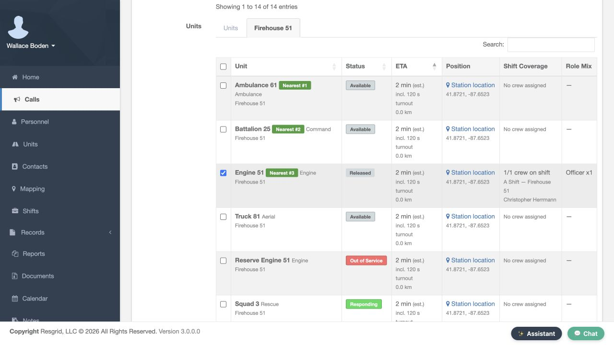
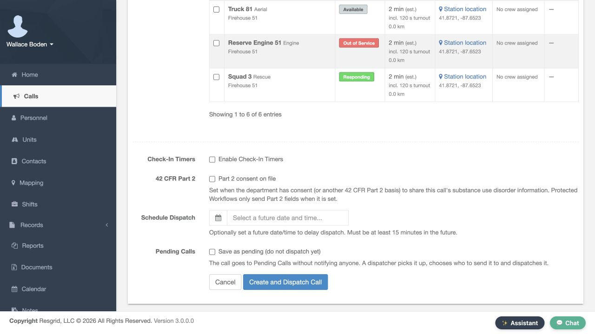
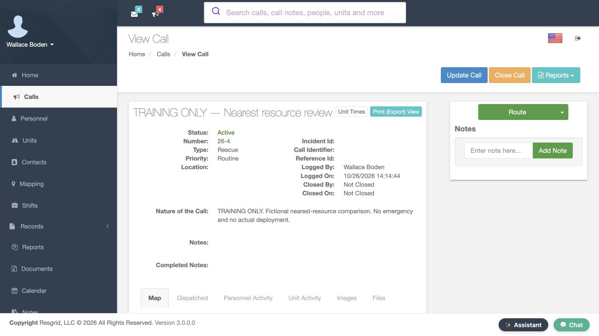
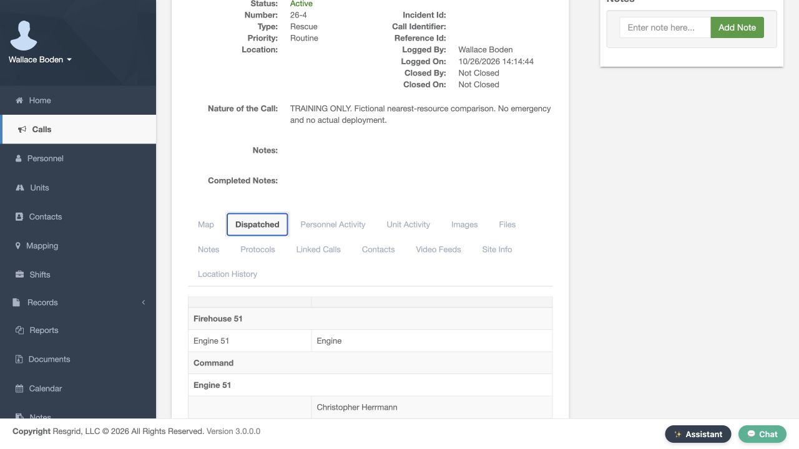
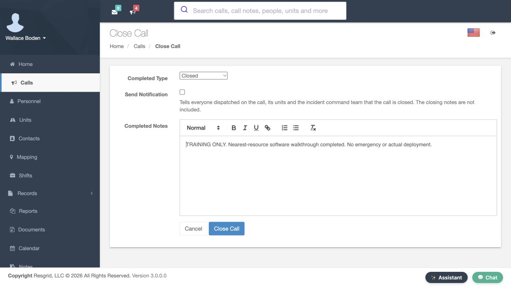

Practice
Make one justified selection and compare the saved call list with your intended recipients.
Examples for your department
- Fire / EMS
- Chicago Fire training: compare a station engine and mobile rescue using response time and current crew context.
- Community response
- Mobile crisis teams: compare clinicians by actual availability, permitted location and operational role.
- Search and rescue
- Search and rescue: inspect stale remote positions and staging origin before selecting a team.
- Security
- Security: compare patrol locations within site and supervisor dispatch scope.
- Wildland
- Wildland contractors: include turnout and remote travel limits when comparing crew units.
- Industrial
- Industrial response: check facility access, equipment status and qualified role mix alongside proximity.
Transcript
Download transcriptRead the complete transcript
Find and compare nearby personnel and units on New Call Audience: Dispatchers and supervisors Prepare a useful comparison In the Chicago Fire demonstration department, we will compare Engine 51, Truck 81 and Reserve Engine 51. These are fictional training resources. Before opening a call, inspect each unit's type, station assignment and current status. A nearby unit in maintenance is different from an available unit. Check that station coordinates are correct and that crews have usable current assignments. This preparation makes the nearest list an operational comparison instead of a collection of unexplained distances. Practice: Compare Engine 51, Truck 81 and Reserve Engine 51: record their visible status, station and crew context. Give the call a location Open New Call and enter a training name and nature. Choose the intended type and priority, then place a pin at the exercise location. You can enter latitude and longitude and use Set Pin On Map, or use the location tools your department makes visible. Confirm the pin represents the incident rather than a station or destination. Without a usable incident location, Resgrid cannot compare response distances. Wait for the lists to finish refreshing after the point changes. Practice: Set one clear incident pin and confirm the written coordinates describe the same point. Read the unit lists Scroll to the unit dispatch lists. The Units tab compares the units you may dispatch. The Firehouse 51 tab shows our station resources. This training department has all six units assigned to that station. Read the current status alongside ETA and position. Nearest badges identify the first available resources with measurable distance in the ranked result. They do not certify equipment readiness or crew capability. Compare the named unit and its situation before ticking a recipient, even when it carries the first nearest badge. Practice: Explain why the first ranked available unit is or is not appropriate for your exercise. Separate response time from distance The response comparison can include turnout as well as travel. In Call and Dispatch Settings, set In-quarters turnout to 120 seconds for this exercise, save, and reopen the page. Mobile turnout stays at zero. Return to New Call and set the training pin again. The unit rows now show an estimated two-minute response including 120 seconds of turnout. Here the origin is the station; this does not establish the unit's physical location. The distance measures separation from the incident. An estimated time uses an approximation, while a provider-derived drive time depends on the positions and route information available at that moment. Practice: Compare the saved 120-second station allowance with the literal incl. 120 s turnout annotation, and explain why 0.0 km does not mean an instant response. Read crew and role mix Inspect Shift Coverage and Role Mix as well as response time. Initially, our unit rows show No crew assigned. Open Units, then Unit Staffing. In this exercise, choose Christopher Herrmann for Engine 51's Officer or Team Lead seat, save, and reopen the page. Engine 51 now says Fully Staffed because its one configured seat is filled. That is not proof of a complete operational engine crew. Define the seats and qualification requirements your department actually needs. Return to New Call and refresh the incident comparison. Read the resulting crew and role mix rather than inferring them from group membership, a vehicle's seats or its nearest badge. Practice: Compare the one saved training seat with the resulting crew and role mix; distinguish configured staffing from your real operational minimum. Inspect the position source Click Station location for Engine 51. The position panel compares its response origin with the call. Here Resgrid uses the station origin. That can happen for an In Quarters unit or when no usable GPS fix is available; it does not confirm the unit's physical whereabouts. Check the displayed source and any stale warning. If a location is hidden from you, distance and ETA can also be withheld. Do not fill that gap by assuming the unit is somewhere else on the map. Practice: Describe the visible position source and freshness for one suggested unit. Compare personnel separately Open Personnel and inspect the same response context for Christopher Herrmann, our fictional officer. Personnel have their own status and staffing information. The positions in this exercise are simulated training fixes. Read any stale label before relying on an estimate. A person can be close to the incident without being available for assignment, and an available person may have no usable position. A unit assignment gives useful crew context, but it does not establish that this person shares the unit's position. Read the actual row rather than transferring a unit's ranking to every crew member or assuming a role name proves current qualification. Practice: Compare a person and a unit without treating their availability or positions as interchangeable. Understand areas and scope Open Call and Dispatch Settings and review Group-Scoped Dispatch. Response area boundaries describe which area contains an incident. The Group Boundary editor under Stations and Groups is where those areas are drawn. Our New Call comparison reports that the incident is not inside any group boundary. We will inspect the controls without saving a boundary. Dispatch scope controls the candidates used for nearest comparisons. These are separate settings. This demonstration uses a department administrator with department-wide scope. A unit can remain in the dispatch list without a nearest comparison, so a missing estimate does not establish that the unit is unavailable. When a comparison is missing, check the permitted scope, current status, and usable position before deciding what resources are available. We will return to New Call without changing permissions. Practice: Identify whether the current operator has department-wide comparison scope, and distinguish a missing estimate from an unavailable unit. Move the pin and compare again Move the incident pin to a second training location and wait for the refreshed response values. Compare the same named units and personnel before and after the move. Engine 51's distance changes from less than a tenth of a kilometer to 98.8 kilometers, while its estimate rises from two to 195 minutes. These are straight-line estimates, not a routed drive time. A change in distance or turnout-adjusted time may change the order. Check that the labels and pin still describe the intended exercise. The system can retain the view you manually chose, so use the visible coordinates and final list values as evidence instead of expecting every refresh to zoom the map automatically. In this station-based example, several units share an origin, so their distances can change together without changing their order. Practice: Record how one named resource changes between two incident locations. Make and verify the dispatch decision Return the incident pin to the original near training location and wait for the values to refresh. Select the resources that fit the exercise. Here we choose Christopher Herrmann, the first nearby officer, and Engine 51. Engine 51 is third in the overall list, but it is the available engine; the reserve engine is out of service. Check that the unit selection agrees across its station and Units tabs. If a run card also suggests resources, inspect that panel and the final checkboxes together. Ranking does not send anyone by itself. Before saving, review the call, recipients and notification arrangements. After the training save, open the resulting call, 26-4 in this example, and its Dispatched tab. Check Engine 51 and Christopher Herrmann against the intended recipients. This proves the saved assignment; it does not establish that a device received an alert. Confirm member receipt separately. Finish by closing only the training call with Send Notification off, and keep its history. Keep the location source, freshness and estimated-time limits in your decision, even when the first-ranked choice appears obvious. The same review helps a mobile crisis team choose an available clinician, a search and rescue team find a nearby qualified member, or a security supervisor compare patrols. Wildland contractors and industrial teams should also compare crew capability and access to the incident before choosing the first-ranked resource. Practice: Make one justified selection and compare the saved call list with your intended recipients. Examples for your department Fire / EMS: Chicago Fire training: compare a station engine and mobile rescue using response time and current crew context. Community response: Mobile crisis teams: compare clinicians by actual availability, permitted location and operational role. Search and rescue: Search and rescue: inspect stale remote positions and staging origin before selecting a team. Security: Security: compare patrol locations within site and supervisor dispatch scope. Wildland: Wildland contractors: include turnout and remote travel limits when comparing crew units. Industrial: Industrial response: check facility access, equipment status and qualified role mix alongside proximity.